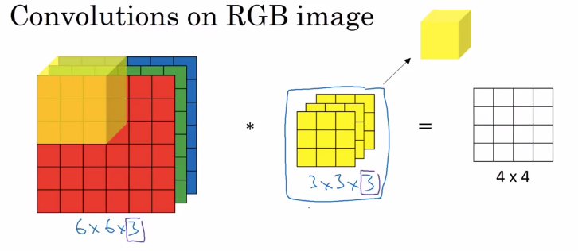

2D Convolution#
In a convolutional neural network (CNN), a 2D convolution is a fundamental operation used to process visual data. It involves sliding a filter (also known as a kernel) across the input image to produce a feature map.
Learning Filters#
In each convolutional layer, we learn multiple filters, denoted as ( K ). These filters are trained to detect various features in the input image, such as edges, textures, and patterns. Each filter is essentially a small matrix of weights that is adjusted during the training process to optimize the network’s performance.

Depth of Kernel in Each Layer#
In a convolutional layer, if the input has multiple channels (e.g., a color image with three channels: Red, Green, and Blue), the depth of the kernel matches the number of input channels. For instance, if the input image has a depth of ( D_{in} ), each filter will have the same depth ( D_{in} ).
If we have a kernel size of ( k \times k ) and an input with ( D_{in} ) channels, each filter will be of size ( k \times k \times D_{in} ). The convolution operation then produces an output feature map that can be stacked together if multiple filters are applied.
Real-World Applications#
Edge Detection: Using filters like the Laplacian, CNNs can detect edges in images, which is useful for object detection and segmentation.
Feature Extraction: Different filters can learn to detect various features such as corners, textures, and shapes, which are crucial for tasks like image recognition and classification.
Image Enhancement: Convolutional layers can be used in applications like super-resolution and denoising to improve image quality.
Understanding how 2D convolutions work and how filters are learned and applied is crucial for building effective CNNs for various image processing and computer vision tasks.
Example#
Consider an input image of size ( 32 \times 32 \times 3 ) (height, width, and depth). If we use 10 filters of size ( 3 \times 3 ), each filter will be ( 3 \times 3 \times 3 ). After applying these filters, we obtain an output feature map of size ( 30 \times 30 \times 10 ) (assuming no padding and a stride of 1).
Python Code Example Using PyTorch#
Here’s an example of implementing a 2D convolutional layer with PyTorch:
import torch
import torch.nn as nn
# Define the convolutional layer
conv_layer = nn.Conv2d(in_channels=3, out_channels=10, kernel_size=3)
# Example input: a batch of images with 3 channels (e.g., RGB), 32x32 pixels
input_tensor = torch.randn(5, 3, 32, 32) # batch_size=5, channels=3, height=32, width=32
# Apply the convolution
output_tensor = conv_layer(input_tensor)
# Output tensor shape
print(output_tensor.shape) # Should be [5, 10, 30, 30] if no padding and stride of 1
In this example, in_channels corresponds to the depth of the input (3 for RGB), out_channels is the number of filters (10), and kernel_size is the size of each filter (3x3).